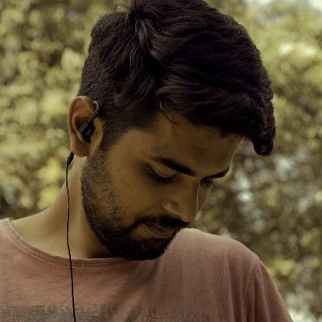

A collective of filmmakers, designers, and engineers obsessed with bridging the gap between narrative intent and visual discovery.

Vibhav Nigam
Founder & Narrative Junkie
As an independent film editor for more than 9 years, Vibhav spent years unravelling messy stories in the edit bay. Driven by the "absurdity" of discovery friction, he built inscene.io to replace robotic searches with narrative intelligence.
With 5+ years in social impact, Kriti brings deep listening and a human-centered approach. She designs the "Top 9" grid to eliminate discovery fatigue, transforming complex technology into a clear tool that keeps the human creator in control.
With 8+ years in search and retrieval, Aditya builds the engine behind inscene.io. He focuses on making "Narrative Thought" scalable, ensuring the platform’s infrastructure is fast, secure, and ready for professional media discovery.